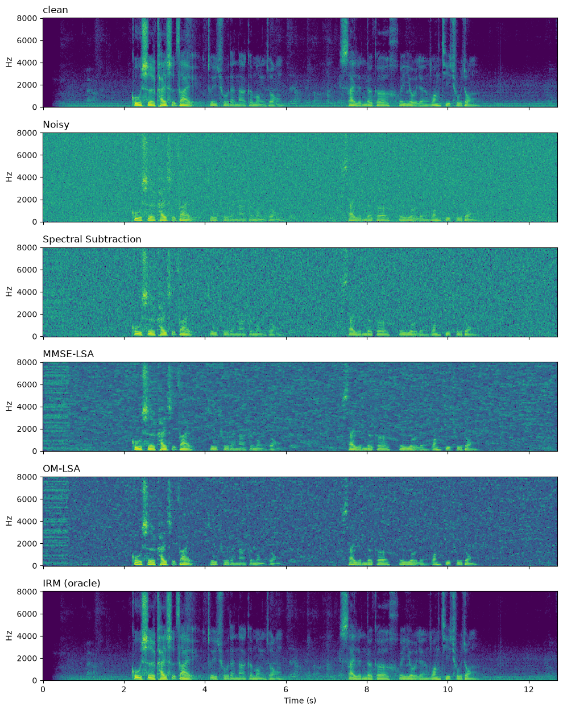

柳若是
从 1979 年的谱减法到 2001 年的 OM-LSA
建议戴耳机，按顺序听。SNR 只是参考——它们真正的差别在听感。
未经处理，作为基准。
重点听：忽隐忽现、像水滴或小鸟叫的杂音。 这就是「音乐噪声」——纯噪声区的功率随机波动，波动到高于均值的时频点被保留下来， 形成孤立的窄带音。根源是「用随机量去减随机量，再做硬判决」。
用上一帧的输出估计先验信噪比（α = 0.98），引入时间平滑后水滴声基本消失。 代价是对语音起始的反应变慢。
在幅度域做贝叶斯 MMSE 估计，增益含修正贝塞尔函数。
改到对数幅度域。幅度域对「低估一半」的惩罚只有「高估一倍」的 1/4， 天然倾向过度压制；对数域对两者惩罚相同，且贴近人耳的对数响度感知。 低信噪比处对弱语音「手下留情」。
引入二状态模型与语音存在概率 p，按 GLSAp · Gmin1−p 加权。承认「大部分时频点根本没有语音」这一事实。 残留噪声最平顺自然。
计算 IRM 需要干净语音，现实中不可得。故意「作弊」算出来， 是为了测出这套框架的天花板——距离它还有 5.5 dB，这就是数据驱动方法的空间。

这个项目的主轴不是「实现了哪些算法」，而是： 每削弱一个假设，需要付出什么代价。 谱减法假设逐时频点独立判决 → 音乐噪声； 判决引导用一帧的记忆换掉它 → 噪声一变化即失效； 最小值统计用 60 帧历史换掉「噪声恒定」→ 引入约等于窗长的跟踪滞后； OM-LSA 承认语音稀疏 → 但 q 的估计仍是启发式。 没有免费的午餐。